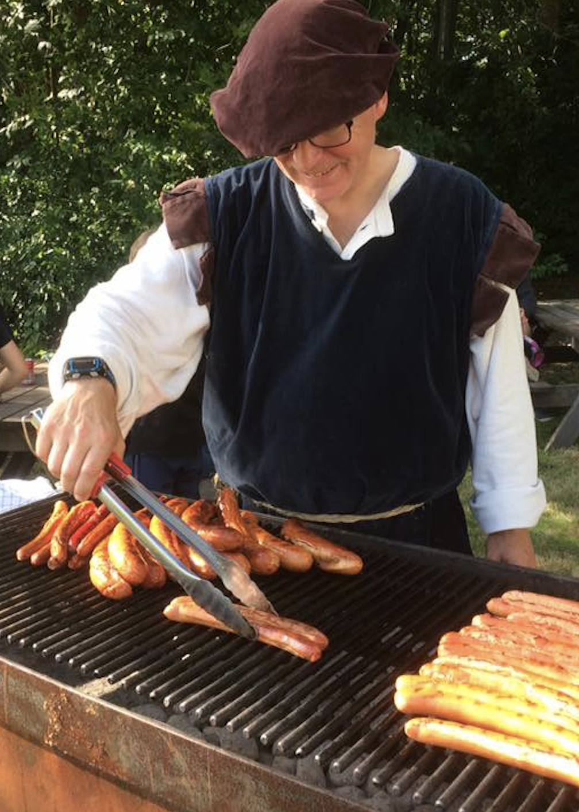

VARDE MEDIEVAL FESTIVAL
 31st AUGUST - 3th SEPTEMBER
31st AUGUST - 3th SEPTEMBER

When autocity and cosiness go hand in hand
31st AUGUST - 3th SEPTEMBER
When autocity and cosiness go hand in hand
Are you also curious about how to live back in the Middle Ages and are you ready to go back in time? At the Varde Medieval Festival you get the chance to come close to when the nutmeg stands ready to teach you to paint flour, the smell of bonfire draws into your newly made monk cutter and the musicians offer dance.
It can be difficult to get into what the Middle Ages are and how they lived. Therefore, the importance of knowledge sharing is paramount when you visit the Varde Medieval Festival. Whether you are a child or an adult does not matter. Here you will find knowledge sharing at children's height and more profound for the hardcore.

To us, community plays a huge role. Both you feel like you're in a larger community when you visit us, but also as a whole. When you come to the Varde Medieval Festival we are many who have worked hard to give you a nice and enjoyable experience. Thank you for contributing to the community.
